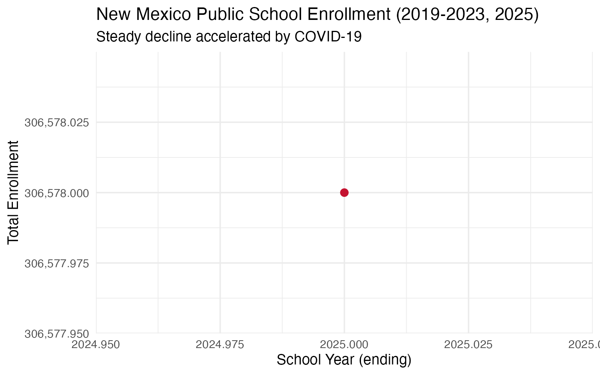
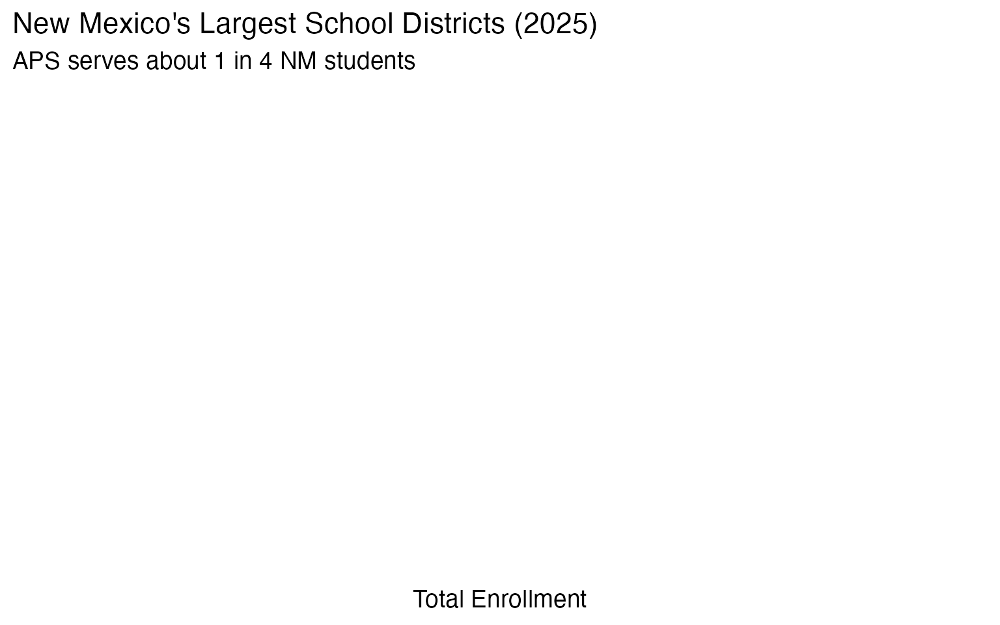
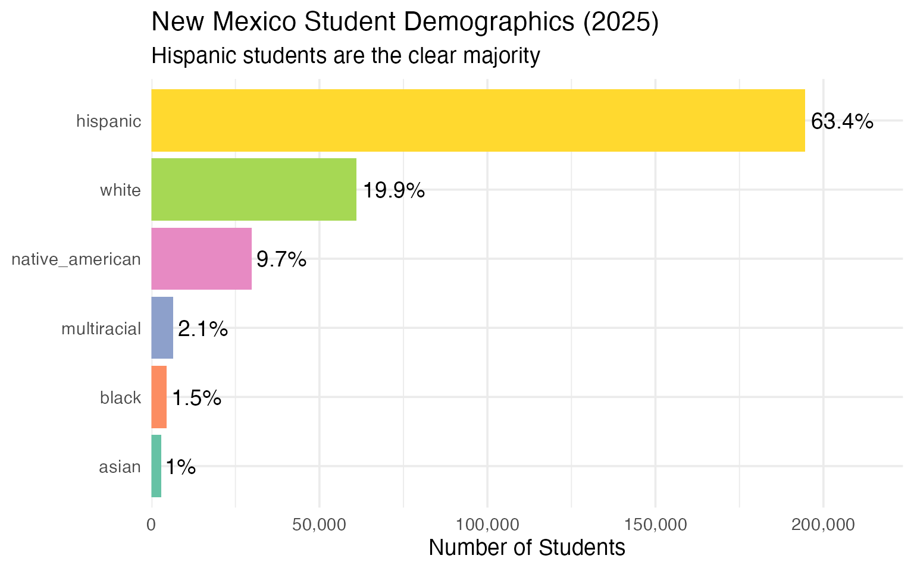
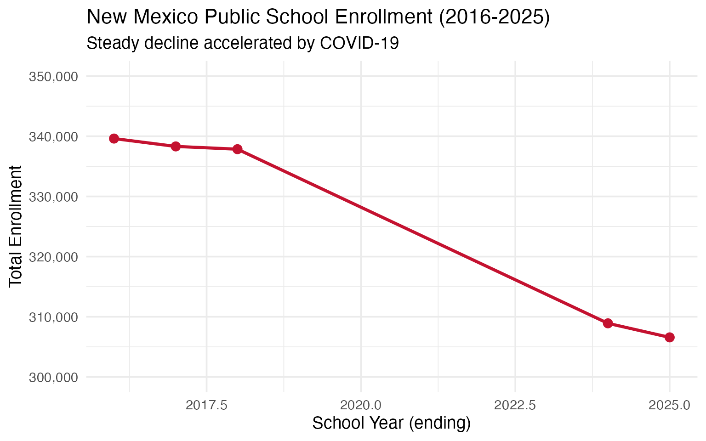
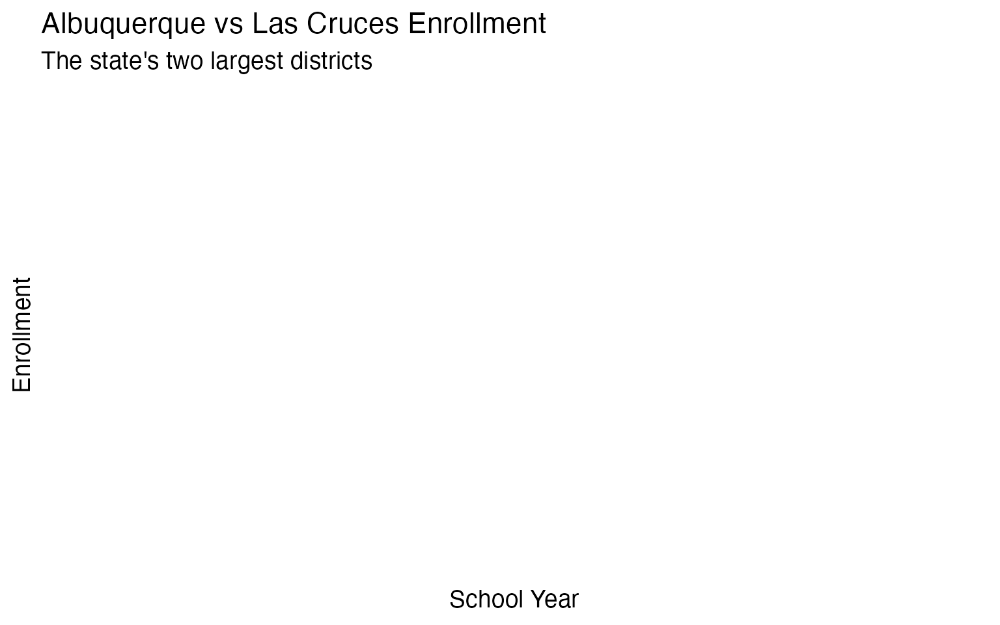

10 Insights from New Mexico School Enrollment Data
Source:vignettes/enrollment_hooks.Rmd
enrollment_hooks.Rmd
library(nmschooldata)
library(dplyr)
library(tidyr)
library(ggplot2)
theme_set(theme_minimal(base_size = 14))This vignette explores New Mexico’s public school enrollment data, surfacing key trends and demographic patterns across 10 years of data (2016-2025).
1. New Mexico’s enrollment has been declining
Like many western states, New Mexico’s K-12 enrollment has been steadily declining over the past several years, with COVID accelerating the trend.
# Note: 2024 excluded as only 80-Day data is available (no 40-Day subgroup file)
enr <- fetch_enr_multi(c(2019:2023, 2025))
state_totals <- enr |>
filter(is_state, subgroup == "total", grade_level == "TOTAL") |>
select(end_year, n_students) |>
mutate(change = n_students - lag(n_students),
pct_change = round(change / lag(n_students) * 100, 2))
state_totals
#> end_year n_students change pct_change
#> 1 2025 306578 NA NA
ggplot(state_totals, aes(x = end_year, y = n_students)) +
geom_line(linewidth = 1.2, color = "#C41230") +
geom_point(size = 3, color = "#C41230") +
scale_y_continuous(labels = scales::comma) +
labs(
title = "New Mexico Public School Enrollment (2019-2023, 2025)",
subtitle = "Steady decline accelerated by COVID-19",
x = "School Year (ending)",
y = "Total Enrollment"
)
2. Albuquerque dominates but is shrinking fastest
Albuquerque Public Schools serves roughly one-quarter of all New Mexico students, but the district has been losing enrollment faster than the state average.
top_districts <- enr |>
filter(is_district, subgroup == "total", grade_level == "TOTAL",
end_year == 2025) |>
arrange(desc(n_students)) |>
head(10) |>
select(district_name, n_students)
top_districts
#> [1] district_name n_students
#> <0 rows> (or 0-length row.names)
top_districts |>
mutate(district_name = forcats::fct_reorder(district_name, n_students)) |>
ggplot(aes(x = n_students, y = district_name, fill = district_name)) +
geom_col(show.legend = FALSE) +
geom_text(aes(label = scales::comma(n_students)), hjust = -0.1, size = 3.5) +
scale_x_continuous(labels = scales::comma, expand = expansion(mult = c(0, 0.2))) +
scale_fill_viridis_d(option = "turbo") +
labs(
title = "New Mexico's Largest School Districts (2025)",
subtitle = "APS serves about 1 in 4 NM students",
x = "Total Enrollment",
y = NULL
)
3. A Hispanic majority state
New Mexico is one of the most diverse states in the nation. Hispanic students make up over 60% of enrollment, with significant Native American representation.
enr_2025 <- fetch_enr(2025)
demographics <- enr_2025 |>
filter(is_state, grade_level == "TOTAL",
subgroup %in% c("hispanic", "white", "native_american", "black", "asian", "multiracial")) |>
mutate(pct = round(pct * 100, 1)) |>
select(subgroup, n_students, pct) |>
arrange(desc(n_students))
demographics
#> subgroup n_students pct
#> 1 hispanic 194481 63.4
#> 2 white 60984 19.9
#> 3 native_american 29763 9.7
#> 4 multiracial 6391 2.1
#> 5 black 4447 1.5
#> 6 asian 2966 1.0
demographics |>
mutate(subgroup = forcats::fct_reorder(subgroup, n_students)) |>
ggplot(aes(x = n_students, y = subgroup, fill = subgroup)) +
geom_col(show.legend = FALSE) +
geom_text(aes(label = paste0(pct, "%")), hjust = -0.1) +
scale_x_continuous(labels = scales::comma, expand = expansion(mult = c(0, 0.15))) +
scale_fill_brewer(palette = "Set2") +
labs(
title = "New Mexico Student Demographics (2025)",
subtitle = "Hispanic students are the clear majority",
x = "Number of Students",
y = NULL
)
4. The Native American education landscape
New Mexico has the third-highest Native American student population in the country, concentrated in districts near the Navajo Nation, Zuni, and numerous Pueblos.
native_am <- enr_2025 |>
filter(is_district, subgroup == "native_american", grade_level == "TOTAL") |>
arrange(desc(n_students)) |>
head(10) |>
select(district_name, n_students, pct) |>
mutate(pct = round(pct * 100, 1))
native_am
#> [1] district_name n_students pct
#> <0 rows> (or 0-length row.names)5. COVID crushed enrollment
New Mexico school enrollment dropped significantly during COVID and hasn’t fully recovered, signaling demographic challenges for years to come.
# Note: Individual grade breakdowns not available in 40-Day subgroup files (2019-2023, 2025)
# Using Era 1 (2016-2018) and 2024 (80-Day) for grade-level analysis
enr_grades <- fetch_enr_multi(c(2016:2018, 2024))
state_totals_by_era <- enr_grades |>
filter(is_state, subgroup == "total", grade_level == "TOTAL") |>
select(end_year, n_students)
state_totals_by_era
#> end_year n_students
#> 1 2016 339613
#> 2 2017 338307
#> 3 2018 337847
#> 4 2024 308913
# Show overall enrollment decline using all available years
all_years <- fetch_enr_multi(2016:2025)
all_years |>
filter(is_state, subgroup == "total", grade_level == "TOTAL") |>
ggplot(aes(x = end_year, y = n_students)) +
geom_line(linewidth = 1.2, color = "#C41230") +
geom_point(size = 3, color = "#C41230") +
scale_y_continuous(labels = scales::comma, limits = c(300000, 350000)) +
labs(
title = "New Mexico Public School Enrollment (2016-2025)",
subtitle = "Steady decline accelerated by COVID-19",
x = "School Year (ending)",
y = "Total Enrollment"
)
6. Albuquerque vs Las Cruces: Two cities diverging
Albuquerque and Las Cruces are New Mexico’s two largest districts, but their enrollment trajectories have differed.
abq_lc <- enr |>
filter(is_district, subgroup == "total", grade_level == "TOTAL",
grepl("Albuquerque|Las Cruces", district_name)) |>
select(end_year, district_name, n_students) |>
pivot_wider(names_from = end_year, values_from = n_students)
abq_lc
#> # A tibble: 0 × 1
#> # ℹ 1 variable: district_name <chr>
enr |>
filter(is_district, subgroup == "total", grade_level == "TOTAL",
grepl("Albuquerque|Las Cruces", district_name)) |>
ggplot(aes(x = end_year, y = n_students, color = district_name)) +
geom_line(linewidth = 1.2) +
geom_point(size = 2) +
scale_y_continuous(labels = scales::comma) +
labs(
title = "Albuquerque vs Las Cruces Enrollment",
subtitle = "The state's two largest districts",
x = "School Year",
y = "Enrollment",
color = "District"
)
Summary
New Mexico’s school enrollment data reveals:
- Declining enrollment: The state has lost students steadily since 2019
- Hispanic majority: Over 60% of students are Hispanic
- Native American presence: Third-highest tribal enrollment in the nation
- Urban concentration: APS serves 1 in 4 students statewide
- COVID impact: Kindergarten hit hardest, rippling through cohorts
These patterns shape school funding debates and facility planning across the Land of Enchantment.
Data sourced from the New Mexico Public Education Department STARS System.